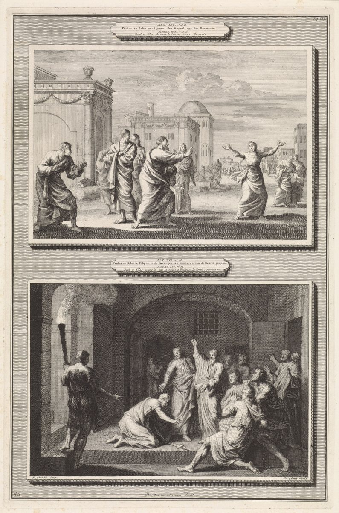

Acts 16 — The Mister Translation

⚠ Two scenes on one plate, each with its verses lettered in Dutch and French on a cartouche: above, Acts 16:16–18, Paul turning on the girl with the Python spirit; below, 16:26, “the doors are opened,” with a man on his knees at the apostles’ feet and a sword on the floor, which is the jailer of vv27–29. The engraver draws no angel at the prison; Luke names none (v25–26). The plate is a print from an Amsterdam Bible series, and it supplies the faces and the torchlight; the Greek supplies neither.

Translator’s Notes — verse by verse
Each note explains this translation's choice and compares the seven versions on the shelf. Quotations from copyrighted versions (NIV, TLB, NWT) are kept to short phrases for comparison; KJV, Geneva, Douay-Rheims and ASV are public domain.
Timothy of Lystra, “well spoken of” (Acts 16:1–2). Kai idou, “and look,” brings him on, and Luke sets his two parents against each other with men… de: huios gynaikos Ioudaias pistēs, patros de Hellēnos, “son of a believing Jewish woman, but of a Greek father.” Neither parent is named in this verse; the mother is described by her faith and the father by his people. The letter to Timothy names a grandmother Lois and a mother Eunice (2 Timothy 1:5), and Acts 16 does not. Timothy is named in six verses of Acts, 16:1, 17:14, 17:15, 18:5, 19:22 and 20:4, and this is the first of them; Timothy has his own entry. Emartyreito, “was well spoken of,” is the passive of martyreō, “to bear witness,” and the passive stands in four verses of Acts: of the seven men to be chosen at 6:3 (“men of good testimony”), of Cornelius at 10:22 (“well spoken of by the whole nation of the Jews”), of Timothy here, and of Ananias of Damascus at 22:12. The witnesses here are “the brothers in Lystra and Iconium,” two of the cities of 14:6 and 14:21. KJV and ASV “well reported of,” NIV “spoke well of him,” NWT 1984 “well reported on,” Douay “gave a good testimony,” TLB “well thought of.” At v1 the mother is, in the ASV, “a Jewess that believed”; NWT 1984 “a believing Jewish woman,” NIV “Jewish and a believer,” TLB “a Christian Jewess.” The apparatus gives gynaikos, “a woman,” to Westcott–Hort, Tregelles and Nestle–Aland 28, and tinos gynaikos, “a certain woman,” to Robinson–Pierpont; KJV “a certain woman” has the extra word.
“He circumcised him because of the Jews” (Acts 16:3). Paul wished this man to go out with him, and labōn periemen auton dia tous Ioudaious tous ontas en tois topois ekeinois, “taking him, he circumcised him because of the Jews who were in those places, for they all knew that his father was a Greek.” The Greek gives one reason, and it is about what the Jews of those places knew (ēdeisan gar hapantes); it does not say that Timothy asked, or that he was anything before, or why the father’s being a Greek mattered to them. The sentence stands between two refusals. The congregation at Jerusalem has just heard the demand, “Unless you are circumcised according to the custom of Moses, you cannot be saved” (15:1) and “It is necessary to circumcise them” (15:5), and James’s judgment is “that we should not trouble those from the nations who are turning to God” (15:19). And Paul writes of another young man, “Not even Titus, who was with me, being a Greek, was compelled to be circumcised” (Galatians 2:3, not yet on these pages; the verb is ēnankasthē, “was compelled”). Luke’s verb is a plain active, “he circumcised him,” and neither text mentions the other; this page prints the Greek of both and does not decide how they fit. KJV, ASV, NIV, NWT 1984 and Douay “circumcised him” give the verse as it stands, but the TLB “In deference to the Jews of the area” names a motive of courtesy that dia does not say, and ends the verse “and hadn’t permitted this before,” a clause about the father that the Greek does not have.
“The decrees that had been decided” (Acts 16:4–5). Paredidosan autois phylassein ta dogmata ta kekrimena hypo tōn apostolōn kai presbyterōn tōn en Hierosolymois: “they were handing on to them, to keep, the decrees that had been decided by the apostles and elders who were in Jerusalem.” Dogma stands in six verses of the New Testament: Luke 2:1, where it is the decree that went out from Caesar Augustus; here; Acts 17:7, “the decrees of Caesar”; Ephesians 2:15; and Colossians 2:14 and 2:20 (Colossians 2 not yet on these pages). The word does not stand anywhere in Acts 15: the letter says “it seemed good to the Holy Spirit and to us” (15:28), and James’s egō krinō, “I judge” (15:19, printed there “my judgment is”), has the root of kekrimena here. The letter itself was addressed “to the brothers of the nations throughout Antioch and Syria and Cilicia” (15:23); the cities that receive the decrees here are not those three, and Luke does not say which cities he means. KJV “decrees for to keep, that were ordained,” ASV “decrees to keep which had been ordained,” Douay “decrees for to keep, that were decreed,” Geneva “decrees to keep, ordained,” NWT 1984 “decrees that had been decided upon,” NIV “decisions reached by the apostles and elders.” The TLB “making known the decision concerning the Gentiles” names the subject of the decree, which the Greek does not. The apparatus gives Hierosolymois to Westcott–Hort, Tregelles and Nestle–Aland 28 and Hierousalēm to Robinson–Pierpont: one city, two spellings.
“Made strong in the faith” (Acts 16:5). Estereounto tē pistei: stereoō stands in three verses of Acts, 3:7, 3:16 and here. At 3:7 it is the lame man’s “feet and ankles” that “were made strong”; at 3:16 it is the name, by faith in which “this man” is made strong; here it is the congregations, in the faith. Ekklēsiai is plural, “congregations” (as at 15:41, where Paul passes through Syria and Cilicia “strengthening the congregations,” epistērizōn). NWT 1984 “made firm,” ASV and NIV “strengthened,” KJV and Geneva “established,” Douay “confirmed.” KJV, ASV, NIV, Douay and Geneva print “churches” for the plural; the TLB “the church grew daily in faith and numbers” makes it one.
“Hindered by the Holy Spirit” (Acts 16:6). Kōlythentes hypo tou hagiou pneumatos lalēsai ton logon en tē Asia: they are “hindered by the Holy Spirit from speaking the word in Asia.” Kōlyō stands in six verses of Acts: 8:36 (the eunuch’s “What prevents me from being baptized?”, 8:36), 10:47, 11:17 (Peter’s “who was I, that I could hinder God?”), here, 24:23, and 27:43 (the last not yet on these pages); the adverb akōlytōs, “unhindered,” is the last word of Acts (28:31, not yet on these pages). In Peter’s question the hindering was something he could not do to God; here the one who hinders is the Holy Spirit, and what is hindered is the word. “Asia” is the Greek name and this translation prints it: the NIV “province of Asia” and the NWT 1984 “[district of] Asia” add a word of their own, and the TLB “the Turkish province of Asia Minor” puts a modern country and a different name into Luke’s sentence. The ban is not forever: at 19:10 “all those living in Asia” hear the word. KJV and Geneva “forbidden of the Holy Ghost to preach the word in Asia,” ASV “having been forbidden of the Holy Spirit to speak the word in Asia,” Douay “forbidden by the Holy Ghost to preach the word in Asia,” NWT 1984 “forbidden by the holy spirit to speak the word.” Tēn Phrygian kai Galatikēn chōran has one article for both, in Westcott–Hort, Tregelles and Nestle–Aland 28; Robinson–Pierpont put a second article before “Galatian,” which would make two regions of it. The same two names stand again at 18:23, in the other order (tēn Galatikēn chōran kai Phrygian). Neither verse names a city in Galatia, and where the Galatians of Paul’s letter lived is a question this page reports (Phrygia; Galatia; Galatians 1:2) and does not settle. The apparatus also gives Diēlthon, “they went through,” to Westcott–Hort, Tregelles and Nestle–Aland 28 and Dielthontes, “having gone through,” to Robinson–Pierpont.
“The Spirit of Jesus,” and passing by Mysia (Acts 16:7–8). Kata tēn Mysian is “alongside Mysia,” a preposition that gives a line and not an entry (the region they were trying to enter was Bithynia): ASV “over against Mysia,” NIV “the border of Mysia,” NWT 1984 “getting down to” Mysia, KJV and Geneva “to Mysia.” At v8 they parelthontes the region, “passing by” it, the verb whose prefix is the opposite of the dielthon, “went through,” of v6. KJV and ASV “passing by Mysia,” NIV “passed by Mysia,” but Geneva “passed through Mysia,” Douay “passed through Mysia,” and the TLB “went on through Mysia province,” which reverses the Greek. The one who will not allow them is to pneuma Iēsou, “the Spirit of Jesus.” The exact phrase stands in this verse alone in the New Testament; Philippians 1:19 has “the Spirit of Jesus Christ” (Philippians 1:19), and Acts has pneuma kyriou at 5:9 (printed “the Spirit of the Lord”) and 8:39 (printed “the Spirit of Jehovah”), the same Greek phrase twice. The apparatus gives Iēsou to Westcott–Hort, Tregelles and Nestle–Aland 28 and omits it for Robinson–Pierpont, whose reading is “the Spirit”: KJV and Geneva “the Spirit suffered them not” are the two versions on the shelf that print the short reading, and ASV “the Spirit of Jesus suffered them not,” Douay “the Spirit of Jesus suffered them not,” NIV “the Spirit of Jesus would not allow them,” NWT 1984 “the spirit of Jesus did not permit them,” TLB “the Spirit of Jesus said no” print the long one. The Holy Spirit of v6 and the Spirit of Jesus of v7 are given the same kind of act, and the Greek does not say whether they are two names for one Spirit.
A vision, a Macedonian, and “we” (Acts 16:9–10). Horama dia nyktos tō Paulō ōphthē: “a vision appeared to Paul during the night.” The man in it is anēr Makedōn tis, “a certain Macedonian man,” and Luke does not say how Paul knew his country. Diabas eis Makedonian boēthēson hēmin: one participle and one imperative, “Cross over into Macedonia and help us”; the man speaks for a people. KJV and ASV “Come over into Macedonia, and help us,” NIV “Come over to Macedonia and help us,” NWT 1984 “Step over into” Macedonia “and help us,” Douay “Pass over into Macedonia, and help us,” Geneva “Come into Macedonia, and help us” (no “over”), TLB “Come over here and help us” (“here” for Macedonia). He is parakalōn, “begging”: NIV “begging,” NWT 1984 “entreating,” ASV and Douay “beseeching,” KJV and Geneva “prayed him,” TLB “pleading.” The same verb stands in three more verses of this chapter (vv15, 39 and 40), and this translation prints “begged,” “appealed to” and “encouraged.” Then the grammar changes person: v8 is “they went down to Troas,” and v10 is ezētēsamen, “we sought.” The “we” runs through v17; from v18 to the end of the chapter the narration is “they” and “Paul and Silas”; and in the Greek the narration’s “we” is back at 20:5–6, where “we” sail from Philippi. Luke does not name the speaker, and this page reports the shift without deciding who “we” is. Sumbibazontes, “concluding,” is a plural participle meaning “bringing together”: the group reasons to its conclusion. It stands in three verses of Acts, here, at 9:22, where Saul is “proving that this one is the Christ,” and at 19:33, where the crowd “put forward” Alexander. The conclusion is that God proskeklētai hēmas, “had called us,” the perfect of the verb of 13:2 (“the work to which I have called them”). The apparatus gives theos, “God,” to Westcott–Hort, Tregelles and Nestle–Aland 28 and kyrios, “Lord,” to Robinson–Pierpont: KJV and Geneva “the Lord had called us” print the second, and ASV, Douay and NIV “God had called us,” NWT 1984 “God had summoned us,” TLB “God was sending us” the first. ASV “concluding that God had called us,” NIV “concluding that God had called us,” NWT 1984 “drawing the conclusion,” KJV “assuredly gathering,” Douay and Geneva “being assured.” At v9 the order of “to Paul” and “appeared” and of “Macedonian” and “a certain” differs between the first three editions and Robinson–Pierpont; the words are the same.
The voyage, and Philippi “a colony” (Acts 16:11–12). Euthydromēsamen, “we made a straight run,” stands in two verses of the New Testament, here and at 21:1, and each time it belongs to a “we” voyage. KJV, ASV, Douay and Geneva “a straight course,” NWT 1984 “with a straight run,” NIV “sailed straight for,” TLB “sailed straight across.” Samothrace is named in this verse alone in the New Testament. Neapolis is two words in Westcott–Hort, Tregelles and Nestle–Aland 28 (Neān Polin, “New City”) and one in Robinson–Pierpont (Neapolin). Of Philippi Luke says hētis estin prōtē tēs meridos Makedonias polis, kolōnia: “which is the first city of the district of Macedonia, a colony.” The apparatus gives prōtē tēs meridos to Westcott–Hort and Tregelles, the same with a second article before “Macedonia” to Robinson–Pierpont, and prints for Nestle–Aland 28 an emendation, prōtēs meridos, which would read “a city of the first district of Macedonia.” Meris is “a portion” or “district,” and Luke does not say what division he means or whether “first” is first in rank, or first in the order a traveler arrives. Kolōnia is the Latin colonia written in Greek letters, and it stands in this verse alone in the New Testament; what Luke gives of Philippi’s Roman character is the word itself and, later in the chapter, the magistrates and the talk of Romans (vv20–38), and the history of the settlement is not in Luke and is not set out here. ASV “the first of the district, a Roman colony,” NIV “a Roman colony and the leading city of that district” and TLB “a Roman colony just inside the Macedonian border” add “Roman,” which the Greek does not say, and TLB adds a border as well. KJV “the chief city of that part of Macedonia, and a colony,” Douay “the chief city of part of Macedonia, a colony,” NWT 1984 “a colony, which is the principal city of the district,” and Geneva “the chief city in the parts of Macedonia, and whose inhabitants came from Rome to dwell there,” which turns the one word “colony” into a clause. Macedonia has its own entry.
“A place of prayer” by a river (Acts 16:13). Exō tēs pylēs para potamon hou enomizomen proseuchēn einai: “outside the gate by a river, where we supposed there was a place of prayer.” The Greek noun is proseuchē, “prayer,” and in this verse and in v16 (“to the place of prayer”) it names a place. The noun stands in nine verses of Acts, 1:14, 2:42, 3:1, 6:4, 10:4, 10:31, 12:5 and these two, and in the other seven it is prayer, or the hour of prayer (3:1), and not a place. Luke does not say “synagogue,” and the verb is enomizomen, “we supposed”: the place is a guess. The apparatus gives pylēs, “gate,” and enomizomen proseuchēn einai to Westcott–Hort, Tregelles and Nestle–Aland 28, and poleōs, “city,” and enomizeto proseuchē, “prayer was thought to be (there),” to Robinson–Pierpont. KJV “out of the city” and Geneva “out of the city” print the second reading, and ASV and Douay “without the gate,” NIV “outside the city gate,” NWT 1984 “outside the gate” the first; the TLB “a little way outside the city” follows neither word. At the second clause the KJV “where prayer was wont to be made” and Geneva “where they were wont to pray” print Robinson–Pierpont’s sense of a custom; Douay “where it seemed that there was prayer,” ASV “we supposed there was a place of prayer,” NIV “we expected to find a place of prayer,” NWT 1984 “we were thinking there was a place of prayer” and TLB “where we understood some people met for prayer” keep the supposing. The ones who have come together are tais synelthousais gynaixin, “the women who had come together”; the man of the vision at v9 was a Macedonian man, and the first hearers named at Philippi are women, and the Greek says nothing more of the contrast. The TLB “we taught the Scriptures to some women” supplies a subject matter that elaloumen, “we spoke,” does not.
Lydia, “a seller of purple,” and a heart the Lord “opened” (Acts 16:14–15). Porphyropōlis, “seller of purple,” stands in this verse alone in the New Testament (purple). She is polis Thyateirōn, “of the city of Thyatira,” a name that stands in four verses of the New Testament: here and Revelation 1:11, 2:18 and 2:24 (Revelation 2:18, where the words to Thyatira begin; Thyatira). Sebomenē ton theon is “worshiping God,” the participle of 13:43 and 13:50, where it said “the worshiping proselytes” and “the worshiping women”; the participle sebomen- stands in six verses of Acts, those two, here, 4, 17 and 18:7. Ēkouen is “was listening,” and the heart is opened by ho kyrios: hēs ho kyrios diēnoixen tēn kardian prosechein tois laloumenois hypo Paulou. The verb dianoigō is Luke’s verb of opening a mind or the scriptures: “while he was opening the Scriptures to us” and “he opened their minds” (Luke 24:32, 24:45), and Paul “opening and setting out” at 17:3; here the object is a heart, and the subject is “the Lord,” which the Greek does not say is Jehovah or Jesus, and this translation keeps “Lord” as at 13:2. The NWT 1984 prints “Jehovah opened her heart wide to pay attention” (and “faithful to Jehovah” at v15); KJV “whose heart the Lord opened, that she attended unto,” Geneva “whose heart the Lord opened, that she attended unto,” ASV “whose heart the Lord opened to give heed unto,” Douay “whose heart the Lord opened to attend to,” NIV “The Lord opened her heart to respond,” and TLB “the Lord opened her heart and she accepted,” which names the result and not the hearing. KJV, ASV and NWT 1984 “a seller of purple,” NIV “a dealer in purple cloth,” TLB “a merchant of purple cloth.” At v15 ho oikos autēs, “her household,” is baptized with her, and Luke gives neither a number nor a name. Kekrikate me pistēn tō kyriō einai, “you have judged me to be faithful to the Lord,” turns on pistēn, “faithful” or “believing”: KJV, ASV, Douay and Geneva “judged me to be faithful to the Lord,” NWT 1984 “judged me to be faithful to Jehovah,” NIV “If you consider me a believer in the Lord,” TLB “If you agree that I am faithful to the Lord.” Parebiasato hēmas, “she urged us strongly,” is the verb of the two disciples on the road to Emmaus, who “urged him strongly, saying, ‘Stay with us’” (Luke 24:29), and the two verses are the only ones in the New Testament with parabiazomai. The apparatus gives the present imperative menete, “stay,” to Westcott–Hort, Tregelles and Nestle–Aland 28, and the aorist meinate to Robinson–Pierpont; the aorist is the form of Luke 24:29’s Meinon. KJV, ASV, Douay and Geneva “she constrained us,” NIV “she persuaded us,” NWT 1984 “she just made us come,” TLB “she urged us until we did.”
A “Python” spirit, and a servant girl (Acts 16:16). Paidiskēn tina echousan pneuma pythōna: “a certain servant girl having a spirit, a Python.” Paidiskē stands in two verses of Acts, here and at 12:13, where Rhoda comes to the gateway. Pythōna is an accusative in apposition to pneuma, “a spirit, a Python,” in Westcott–Hort, Tregelles and Nestle–Aland 28; Robinson–Pierpont have the genitive Pythōnos, “a spirit of Python.” Python is the name, in Greek tradition, of the serpent of Delphi; that is reported here from the tradition and not from a source on this page, and Luke does not explain the word. The Douay “a pythonical spirit” keeps the Greek word; KJV “possessed with a spirit of divination,” ASV and Geneva “having a spirit of divination” give what it means in place of what it is; NIV “a spirit by which she predicted the future”; NWT 1984 “a spirit, a demon of divination” adds “a demon,” and the TLB “a demon-possessed slave girl” makes the same addition and drops the spirit; the Greek has pneuma and no daimonion. Manteuomenē, “by divining,” stands in this verse alone in the New Testament, from mantis, a seer. KJV and ASV “soothsaying,” Douay and Geneva “divining,” NIV “fortune-telling,” NWT 1984 “the art of prediction,” TLB “fortune-teller.” What she brings her kyrioi, “masters,” is ergasian pollēn, “much profit”: KJV, ASV, Douay and NWT 1984 “much gain,” Geneva “much vantage,” NIV “a great deal of money,” TLB “much money.” Ergasia stands in four verses of Acts: this one, v19, and 19:24 and 19:25, where the silversmith Demetrius says “from this business we have our prosperity.” The word kyrioi is plural here and at v19, and it comes back at v30 in the mouth of the jailer, where it is “Sirs.”
“Slaves of the Most High God” and “a way of salvation” (Acts 16:17). Houtoi hoi anthrōpoi douloi tou theou tou hypsistou eisin, hoitines katangellousin hymin hodon sōtērias. The title ho theos ho hypsistos, “God the Most High,” stands in four verses of the New Testament: Mark 5:7 and Luke 8:28, where the man who meets Jesus (a man with an unclean spirit in Mark and with demons in Luke) says “Jesus, Son of the Most High God”; here, where the speaker has a spirit; and Hebrews 7:1, where Melchizedek is a priest of the same God (not yet on these pages). Luke gives her words in full and gives no verdict on them; what he reports is that she did this for many days, and then what Paul did. Douloi is “slaves,” as at 2:18 and 4:29; she is herself a slave who calls Paul and Silas slaves of a god. NWT 1984 “slaves of the Most High God”; KJV, Douay and Geneva “servants of the most high God,” ASV and NIV “servants of the Most High God,” TLB “servants of God,” which drops the title. Hodon sōtērias has no article: “a way of salvation,” and the phrase stands in this verse alone in the New Testament. It is not “the Way” of 9:2 (9:2), where Acts uses the word absolutely, and yet six of the seven versions print the article: KJV, ASV, Douay, Geneva and NWT 1984 “the way of salvation,” NIV “the way to be saved”; the TLB “how to have your sins forgiven” turns salvation into forgiveness, which the word does not say. The verb is katangellousin, “proclaiming,” and it comes again at v21 in the owners’ charge, katangellousin ethē, “are proclaiming customs”: one verb in the girl’s mouth and in the accusers’. The apparatus gives hymin, “to you,” to Westcott–Hort, Tregelles and Nestle–Aland 28 and hēmin, “to us,” to Robinson–Pierpont; KJV “shew unto us” has the second, and ASV “proclaim unto you,” Douay “preach unto you,” Geneva “show unto you,” NIV “telling you” the first. Katakolouthousa, “following behind,” is katakolouthēsasa in Robinson–Pierpont.
“Deeply irritated,” and the spirit that “went out” (Acts 16:18). Diaponētheis stands in two verses of the New Testament: 4:2, where the priests, the captain of the temple and the Sadducees are “deeply irritated” because the apostles are teaching the people, and here, where Paul is. KJV, Douay and Geneva “being grieved,” ASV “being sore troubled,” NIV “became so annoyed,” NWT 1984 “got tired of it,” TLB “in great distress.” He “turned” and speaks tō pneumati, to the spirit, and not to the girl: Parangellō soi en onomati Iēsou Christou exelthein ap’ autēs, “I command you in the name of Jesus Christ to come out of her.” The formula is Peter’s at 3:6 (“in the name of Jesus Christ the Nazarene, rise up and walk”) and 4:10, and the ordering of baptism at 10:48. The apparatus gives en onomati, with no article, to Westcott–Hort, Tregelles and Nestle–Aland 28, and en tō onomati to Robinson–Pierpont, which is the form of those three. Exēlthen autē tē hōra, “it went out at that very hour,” and in the next verse the owners see that exēlthen hē elpis tēs ergasias autōn, “the hope of their profit had gone out”: Luke uses one verb, in the same form, for the spirit and for the hope, and this translation keeps one English verb for both. None of the seven versions does: KJV “he came out the same hour” and “was gone,” ASV “it came out that very hour” and “was gone,” Douay “he went out the same hour” and “was gone,” Geneva “he came out the same hour” and “was gone,” NIV “the spirit left her” and “was gone,” NWT 1984 “it came out that very hour” and “had left,” TLB “instantly it left her” and “were now shattered.” Nor does Luke say a number: the girl cried “for many days” (epi pollas hēmeras).
“The hope of their profit,” the rulers and the magistrates (Acts 16:19–20). Epilabomenoi ton Paulon kai ton Silan heilkysan eis tēn agoran epi tous archontas: “they seized Paul and Silas and dragged them into the marketplace before the rulers.” Silas is named here for the first time in the chapter; he was chosen at 15:40 (Silas, who is called Silvanus in the letters). At v20 the rulers become stratēgoi, “magistrates.” Stratēgos stands in ten verses of the New Testament, and the other five are in Jerusalem: Luke 22:4 and 22:52, and Acts 4:1, 5:24 and 5:26, where it is the captain of the temple. Here it stands in five verses, 20, 22, 35, 36 and 38, always in the plural, of the men who give the orders at Philippi. The word’s root is a leader of an army; “magistrates” is the sense the plural has at Philippi, and this page does not set out the Latin title behind it. KJV, ASV, Douay and NIV “magistrates,” NWT 1984 “civil magistrates,” Geneva “governors,” TLB “judges.” The owners’ charge, in vv20–21, is Ioudaioi hyparchontes, “being Jews,” and that they ektarassousin, “greatly disturb,” the city (the verb stands in this verse alone in the New Testament; the stem tarass-/tarach-, counting this compound, stands in six verses of Acts, 12:18, 15:24, here, 8, 13 and 19:23). The charge does not mention the girl, the spirit, or the money. Katangellousin ethē ha ouk exestin hēmin paradechesthai oude poiein Rhōmaiois ousin: they “proclaim customs that it is not lawful for us to accept or to practice, being Romans.” Ethos, “custom,” is the word of Stephen’s accusers (“change the customs that Moses handed down to us,” 6:14) and of the men from Judea (“the custom of Moses,” 15:1); at Philippi the customs are the ones a Roman may not take up. KJV “do exceedingly trouble our city,” ASV “do exceedingly trouble our city,” NWT 1984 “disturbing our city very much,” NIV “throwing our city into an uproar,” Douay “disturb our city.” At v21 the NIV “by advocating customs unlawful for us Romans to accept or practice,” KJV “teach customs,” Geneva “preach ordinances,” Douay “preach a fashion,” ASV “set forth customs” and NWT 1984 “publishing customs” use five different English verbs between six versions for katangellousin, the one verb of v17 (“proclaiming”). The profit comes up again in Ephesus, when Demetrius gathers his workmen with “from this business we have our prosperity” (19:25).
“Tearing the garments off them” and the rods (Acts 16:22–23). Perirrēxantes autōn ta himatia: perirrēgnymi stands in this verse alone in the New Testament, and the Greek has the magistrates as its subject and Paul and Silas’s garments as its object. At Lystra Paul and Barnabas had “torn” their own garments (diarrēxantes, 14:14), a different compound of the same root, in distress; here the garments are torn off others. Ekeleuon rhabdizein, “ordered them to be beaten with rods,” uses a verb that stands in two verses of the New Testament, this one and 2 Corinthians 11:25, where Paul writes tris erabdisthēn, “three times I was beaten with rods” (not yet on these pages). Acts reports one beating with rods in Paul’s life up to this point and none for Silas beyond this one; 2 Corinthians counts three for Paul, and this page does not say which of them is Philippi’s. Paul’s later letters name the place twice: “having suffered before and been treated shamefully, as you know, in Philippi” (1 Thessalonians 2:2, not yet on these pages; hybristhentes, the root of “treat outrageously” at 14:5) and, to the Philippians, “having the same struggle you saw in me” (Philippians 1:30). ASV “commanded to beat them with rods,” NWT 1984 “beat them with rods,” Douay “beaten with rods,” Geneva “beaten with rods,” NIV “stripped and beaten with rods,” TLB “stripped and beaten with wooden whips.” The KJV “commanded to beat them” leaves out the rods. Plēgai, “blows,” is the word of v23 (pollas epithentes autois plēgas, “having laid many blows on them”) and again of v33, where the jailer “washed them of the blows”: the beating at the start of the night is washed at its end. KJV, ASV and Douay “many stripes,” Geneva “beaten them sore,” NIV “severely flogged,” NWT 1984 “many blows,” TLB “Again and again the rods slashed down.”
The jailer, the inner prison, and the stocks (Acts 16:23–24). Desmophylax, “jailer,” stands in three verses, 23, 27 and 36, and nowhere else in the New Testament. The order is asphalōs tērein, “to keep them securely,” and the jailer ēsphalisato, “secured” their feet: one root twice, and the same root as in the prison of Acts 5, found “locked with complete security” (5:23) when the angel had been. Tēn esōteran phylakēn is “the inner prison,” and esōteros stands in two verses of the New Testament, here and Hebrews 6:19 (not yet on these pages). Eis to xylon is literally “into the wood”: xylon stands in four verses of Acts, three of them the tree of the cross (5:30, 10:39, 13:29) and this one, the stocks. KJV, ASV, Douay and Geneva “the inner prison,” NWT 1984 “the inner prison,” NIV “the inner cell,” TLB “the inner dungeon”; all seven give “stocks.” The apparatus marks the particle in v23, pollas te in Tregelles, Nestle–Aland 28 and Robinson–Pierpont and de in Westcott–Hort, and the order of “secured” and “their” in v24, ēsphalisato autōn in the first three editions and autōn ēsphalisato in Robinson–Pierpont; neither changes a word of the sense.
Midnight, hymns, and an earthquake with no angel (Acts 16:25–26). Proseuchomenoi hymnoun ton theon: “praying, they were singing hymns to God.” Hymneō stands in four verses of the New Testament: Matthew 26:30 and Mark 14:26 (the hymn sung before going out to the Mount of Olives), here, and Hebrews 2:12 (not yet on these pages). Epēkroonto, “were listening closely,” stands in this verse alone in the New Testament, and the listeners are hoi desmioi, “the prisoners.” KJV “sang praises unto God,” ASV “singing hymns unto God,” NIV “singing hymns to God,” Douay “praised God,” Geneva “sung Psalms unto God,” NWT 1984 “praising God with song,” TLB “singing hymns to the Lord” (the Greek has ton theon, “God”). Asphnō de seismos egeneto megas hōste saleuthēnai ta themelia tou desmōtēriou: “suddenly there was a great earthquake, so that the foundations of the jail were shaken.” The verb saleuō is the verb of 4:31, where, when the congregation had made its petition, “the place where they were gathered was shaken.” Both times it is a place of prayer that is shaken. Then the doors and the bonds: ēneōchthēsan parachrēma hai thyrai pasai, kai pantōn ta desma anethē, “all the doors were opened at once, and everyone’s bonds were loosed.” Both verbs are passive, and the Greek names no agent. Acts has twice told a prison opening with an angel: “an angel of Jehovah opened the doors of the prison by night” (5:19) and, of Peter, “an angel of Jehovah stood by… And his chains fell off from his hands” (12:7). The word for angel does not stand anywhere in Acts 16.
The jailer’s sword (Acts 16:27–28). Exypnos genomenos, “awake from sleep,” uses an adjective that stands in this verse alone in the New Testament (the verb exypnizō is at John 11:11). Spasamenos tēn machairan ēmellen heauton anairein: “drew his sword and was about to kill himself.” Luke gives the reason in the jailer’s own supposing, nomizōn ekpepheugenai tous desmious, “supposing that the prisoners had escaped,” and does not say what he feared would follow. The nearest earlier scene is Herod’s, after Peter’s escape: there was “no small disturbance among the soldiers as to what, then, had become of Peter” (12:18), and Herod, when he does not find him, “ordered them to be led away” (12:19); Luke does not name that sentence either, and the same chapter has James killed “with a sword” (aneilen… machairē, 12:2), the verb and the noun that stand here. Whether the jailer had that in mind this page does not say. Paul’s cry is Mēden praxēs seautō kakon, hapantes gar esmen enthade, “Do yourself no harm, for we are all here!” The apparatus has four editions and four arrangements of “Paul” and “in a loud voice”: phōnē megalē ho Paulos in Robinson–Pierpont, phōnē megalē Paulos in Tregelles, megalē phōnē ho Paulos in Nestle–Aland 28 and Paulos megalē phōnē in Westcott–Hort. ASV, KJV, Douay and Geneva “Do thyself no harm,” NWT 1984 “Do not hurt yourself,” NIV “Don’t harm yourself,” TLB “Don’t do it!”, which omits the harm and the reason.
“Sirs, what must I do to be saved?” (Acts 16:29–31). Eisepēdēsen, “leaped in,” stands in this verse alone in the New Testament, and entromos genomenos, “trembling,” in three: here, Acts 7:32, of Moses before the bush, and Hebrews 12:21 (not yet on these pages), of Moses at the mountain. Then comes Kyrioi, ti me dei poiein hina sōthō? Kyrioi is the word of the girl’s owners, “masters” at vv16 and 19, and here it is a polite “Sirs”; the next verse has ton kyrion Iēsoun, “the Lord Jesus.” The Douay prints “Masters,” the English word of vv16 and 19; KJV, ASV, Geneva, NIV, NWT 1984 and TLB “Sirs.” Dei with sōthēnai is Peter’s sentence at 4:12, “there is no other name… by which we must be saved”; the question “What shall we do?” is the crowd’s at 2:37 and “what you must do” is what Saul is told at 9:6. In this chapter the root of “salvation” and “saved” (sōtēria, sōzō) stands in three verses, 17 (“a way of salvation”), 30 and 31, and the girl’s phrase and the jailer’s question are about the same thing in the same chapter. The answer is Pisteuson epi ton kyrion Iēsoun kai sōthēsē sy kai ho oikos sou, “Believe on the Lord Jesus, and you will be saved, you and your household.” The apparatus gives Iēsoun to Westcott–Hort, Tregelles and Nestle–Aland 28 and Iēsoun Christon, “Jesus Christ,” to Robinson–Pierpont: KJV “Believe on the Lord Jesus Christ, and thou shalt be saved, and thy house” and Geneva “Believe in the Lord Jesus Christ” print the longer reading, and ASV “Believe on the Lord Jesus,” Douay “Believe in the Lord Jesus,” NIV “Believe in the Lord Jesus,” NWT 1984 “Believe on the Lord Jesus” and TLB “Believe on the Lord Jesus” the shorter. “You and your household” is the angel’s sentence to Cornelius, “you will be saved, you and all your household” (11:14), without the “all.” TLB “and your entire household” and NIV “you and your household.”
“With all who were in his house,” a table, and one who believed (Acts 16:32–34). Kai elalēsan autō ton logon tou kyriou syn pasi tois en tē oikia autou: “they spoke the word of the Lord to him, together with all who were in his house.” The apparatus gives kyriou, “of the Lord,” to Tregelles, Nestle–Aland 28 and Robinson–Pierpont and theou, “of God,” to Westcott–Hort; it gives syn, “together with,” to the first three editions and kai, “and to,” to Robinson–Pierpont. The NWT 1984 prints “the word of Jehovah,” and this translation keeps “Lord,” where the Greek says kyrios and does not say which. KJV, ASV, Douay, Geneva and NIV “the word of the Lord.” At v33 he elousen apo tōn plēgōn, “washed them of the blows” (the plēgai of v23), and ebaptisthē autos kai hoi autou pantes parachrēma, “he was baptized, he and all his, at once,” in “that hour of the night.” He washes first and is baptized second, and Luke gives no more of the order. Anagagōn is “bringing up”: ASV “brought them up into his house” and TLB “brought them up into his house” keep the “up,” and KJV, Geneva, NIV and NWT 1984 “brought them into his house” and Douay “brought them into his own house” leave it out. Parethēken trapezan, “set a table before them,” stands in two verses of Acts that have a table, here and 6:2, where the Twelve will not “serve tables.” NWT 1984 “set a table before them,” Douay “laid the table for them,” KJV and Geneva “set meat before them,” ASV “set food before them,” NIV and TLB “set a meal before them.” The last clause is ēgalliasato panoikei pepisteukōs tō theō: “rejoiced with his whole household, having believed God.” Panoikei, “with the whole household,” stands in this verse alone in the New Testament, and the participle pepisteukōs, “having believed,” is singular and masculine: the Greek gives the believing to the jailer and the rejoicing to him with his household. ASV “rejoiced greatly, with all his house, having believed in God,” Douay “rejoiced with all his house, believing God” and NWT 1984 “rejoiced greatly with all his household now that he had believed God” keep that, while Geneva “rejoiced that he with all his household believed in God,” NIV “he and his whole household” and TLB “because all were now believers” give the household the belief as well; the KJV “rejoiced, believing in God with all his house” leaves it open. The verb agalliaō stands in two verses of Acts, here and 2:26 (“my tongue rejoiced”), and believing God with the plain dative is Paul’s own phrase in the storm, pisteuō tō theō (27:25, not yet on these pages). The apparatus gives ēgalliasato to the first three editions and ēgalliato to Robinson–Pierpont, and oikon, “house,” to Westcott–Hort and Nestle–Aland 28 and oikon autou, “his house,” to Tregelles and Robinson–Pierpont.
The rod-bearers, and “Release those men” (Acts 16:35–36). Hēmeras de genomenēs apesteilan hoi stratēgoi tous rhabdouchous: “when day came, the magistrates sent the rod-bearers.” Rhabdouchos stands in two verses of the New Testament, here and v38, and shares its stem with the verb rhabdizein, “to beat with rods,” of v22. The message is Apolyson tous anthrōpous ekeinous, “Release those men,” and Luke gives no reason for it. The jailer repeats it as apestalkan hoi stratēgoi hina apolythēte, “the magistrates have sent that you be released,” and adds poreuesthe en eirēnē, “go in peace.” KJV and Douay “serjeants,” ASV and Geneva “sergeants,” NIV “officers,” NWT 1984 “constables,” TLB “police officers.” At v36 the NIV “ordered that you and Silas be released” names Silas, whom the Greek does not name here, and the TLB “So the jailer told Paul they were free to leave” reports in one clause what the Greek gives in quotation, and drops “in peace.” The apparatus gives tous logous, “the words,” to Westcott–Hort and Tregelles and tous logous toutous, “these words,” to Nestle–Aland 28 and Robinson–Pierpont.
“Men who are Romans” (Acts 16:37–38). Deirantes hēmas dēmosia akatakritous, anthrōpous Rhōmaious hyparchontas, ebalon eis phylakēn; kai nyn lathra hēmas ekballousin? ou gar, alla elthontes autoi hēmas exagagetōsan: “They beat us publicly, uncondemned, men who are Romans, and threw us into prison; and now are they throwing us out secretly? No indeed! But let them come themselves and bring us out.” Paul says this after the beating and not before, and Luke does not say why; this page does not supply a reason. The plural “Romans” covers Paul and Silas, and Luke gives Silas no other description of the kind in this chapter. Akatakritos, “uncondemned,” stands in two verses of the New Testament, here and 22:25, where Paul asks the centurion, as he is being tied up, “Is it lawful for you to flog a man who is a Roman and uncondemned?”; which law stands behind the words is not in Luke, and it is not set out here. The magistrates’ answer is a verb: ephobēthēsan akousantes hoti Rhōmaioi eisin, “they were afraid when they heard that they were Romans.” At Jerusalem, when the tribune learns the same fact, the verb and the ground are the same: ephobēthē epignous hoti Rhōmaios estin, “was afraid, having learned that he is a Roman” (22:29). Paul’s demand is exagagetōsan, “let them bring us out,” and the verb is exagō, which is what the angel does at 5:19 (“leading them out”) and what Peter says of Jehovah at 12:17 (“had led him out of the prison”); at v39 the magistrates themselves do it (exagagontes). KJV “beaten us openly uncondemned, being Romans,” ASV and Douay “beaten us publicly, uncondemned, men that are Romans,” Geneva “beaten us openly uncondemned, which are Romans,” NWT 1984 “flogged us publicly uncondemned, men who are Romans.” The NIV “without a trial, even though we are Roman citizens” and the TLB “we are Roman citizens” print “citizens,” and the Greek has Rhōmaioi, “Romans,” with no word for citizen. For “secretly” the KJV, ASV and Geneva print “privily,” Douay “privately,” NWT 1984 and TLB “secretly,” NIV “quietly.” At v38 KJV, ASV and Geneva “feared,” Douay “were afraid,” NIV “alarmed,” NWT 1984 “grew fearful,” and the TLB “feared for their lives” adds a cause the Greek does not give. The apparatus gives ephobēthēsan de, “but they were afraid,” to the first three editions and kai ephobēthēsan, “and they were afraid,” to Robinson–Pierpont; at v37 Robinson–Pierpont omit “us” (hēmas) before “bring out.”
“They appealed to them” and the brothers at Lydia’s (Acts 16:39–40). Parekalesan autous: “they appealed to them,” and then ērōtōn apelthein apo tēs poleōs, “were asking them to leave the city.” The verb parakaleō stands in four verses of this chapter: the Macedonian man “begging” (v9), Lydia who “begged” (v15), the magistrates here (v39), and Paul and Silas “encouraged” the brothers (v40). So the first request made to Paul in Macedonia and the last two are in the same verb, from a man in a vision, a woman at a river, and the men who had had him beaten. KJV, ASV and Douay “besought them,” Geneva “prayed them,” NWT 1984 “entreated them,” TLB “begged them,” NIV “came to appease them.” At v40 KJV, ASV, Douay and Geneva “comforted them,” NIV and NWT 1984 “encouraged them,” and the TLB “preached to them once more” has them preaching, which the Greek does not say. The apparatus gives apo tēs phylakēs, “from the prison,” to Westcott–Hort and Nestle–Aland 28 and ek tēs phylakēs to Tregelles and Robinson–Pierpont; at v39 Robinson–Pierpont have exelthein, “to go out of,” for apelthein apo, “to go away from,” and at v40 add autous, “them,” after “encouraged.” Paul and Silas “went in to Lydia,” and the brothers there are not named or counted; in this chapter the word adelphoi stands only here and at v2. Paul writes later to “all the holy ones in Christ Jesus who are in Philippi, together with the overseers and servants” (Philippians 1:1), and says that “at the beginning of the good news, when I went out from Macedonia,” no congregation shared with him in giving and receiving “except you alone” (Philippians 4:15); neither verse mentions Lydia or the jailer. The “we” of vv10–17 does not return in this chapter: from v18 the narration is “Paul,” “they” and “the jailer,” and in the Greek of 20:5–6 the “we” is back, and “we” sail from Philippi. The chapter reports the shift and does not say who stayed.
Patterns worth carrying forward
Where this translation keeps the words exact / distinct: “congregations” for ekklēsiai at v5, never “churches”; “made strong” for stereoō at v5, as at 3:7 and 3:16; “hindered” for kōlyō at v6, as at 11:17; “Lord” for kyrios at vv14, 15 and 32, where the referent is open, as at 13:2, against “the Lord Jesus” at v31, where it is named; “worshiping” for sebomenē at v14, as at 13:43 and 13:50; “urged strongly” for parabiazomai at v15, as at Luke 24:29; “servant girl” for paidiskē at v16, as at 12:13; “slaves” for douloi at v17, as at 2:18 and 4:29; “proclaiming” for katangellō at vv17 and 21, as at 13:5; “deeply irritated” for diaponeomai at v18, as at 4:2; “gone out” for exēlthen at vv18 and 19, one English verb for one Greek verb; “magistrates” for stratēgoi at vv20, 22, 35, 36 and 38; “blows” for plēgai at vv23 and 33; “Sirs” for kyrioi at v30, against “masters” at vv16 and 19; “saved” for sōzō at vv30 and 31, as at 4:12; “believe on” for pisteuō epi at v31, as at 11:17; “rejoiced” for agalliaō at v34, as at 2:26; “the good news” for euangelizomai at v10, as at 13:32.
Echoes paid. “Well spoken of,” the passive of martyreō — 6:3 and 10:22, at v2. The demand to circumcise, and James’s judgment — 15:1, 15:5 and 15:19, at v3. The letter and its addressees — 15:23 and 15:28, at v4. “Made strong” — 3:7, 3:16 and 15:41, at v5. “Hindered” — 8:36, 10:47 and 11:17, at v6. The Spirit of the Lord — 5:9 and 8:39, at v7. “Concluding” — 9:22, at v10. “Had called us” — 13:2, at v10. The worshiping women — 13:43 and 13:50, at v14. A heart, minds and the Scriptures opened — Luke 24:32 and 24:45, at v14. “Stay with us,” urged strongly — Luke 24:29, at v15. The servant girl at the gateway — 12:13, at v16. “Son of the Most High God,” said by one with a spirit — Mark 5:7 and Luke 8:28, at v17. “Slaves” and “the Way” — 2:18, 4:29 and 9:2, at v17. The irritation of 4:2, and the name of Jesus Christ — 4:2, 3:6, 4:10 and 10:48, at v18. Captains and magistrates — Luke 22:4, 4:1 and 5:24, at v20. “Customs” — 6:14 and 15:1, at v21. The disturbance among the soldiers, and those who troubled the brothers — 12:18 and 15:24, at vv20 and 27. Garments torn, and treated outrageously — 14:14 and 14:5, at v22. The prison found secure — 5:23, at v23. The tree — 5:30, 10:39 and 13:29, at v24. Hymns — Matthew 26:30 and Mark 14:26, at v25. The place shaken — 4:31, at v26. Doors opened and chains loosed, with no angel — 5:19 and 12:7, at v26. The sword, and the guards who lost a prisoner — 12:2, 12:18 and 12:19, at v27. Trembling before God — 7:32, at v29. “What must I do,” and “we must be saved” — 2:37, 4:12 and 9:6, at v30. “You and your household” — 11:14, at v31. A table, and a tongue that rejoiced — 6:2 and 2:26, at v34. The Lord who led them out — 5:19 and 12:17, at vv37 and 39.
Echoes planted. Timothy, at 17:14–15, 18:5, 19:22 and 20:4, and in the letters (Timothy). Amphipolis and Apollonia and Thessalonica, at 17:1, and the money sent there from Philippi, at Philippians 4:16. The rods and the stripes Paul counts, at 2 Corinthians 11:23–25, and what was done to him at Philippi, at 1 Thessalonians 2:2 and Philippians 1:30. The overseers and servants of Philippi, at Philippians 1:1. “Roman and uncondemned,” and the fear it brings, at 22:25–29. The profit that makes a riot, at 19:24–25. The word spoken in Asia, at 19:10, and the Galatian country and Phrygia, at 18:23. Thyatira, at Revelation 2:18–29. “God Most High,” at Hebrews 7:1. “Believing God,” at 27:25. The “we” that sails from Philippi, at 20:5–6.
⚠ And the places the library reports rather than decides. Who the “we” of vv10–17 is. Whether the Holy Spirit of v6 and the Spirit of Jesus of v7 are two names or two. Where the Galatia of v6 lay. Why Paul circumcised Timothy when Titus was not compelled, and whether the two verses fit (v3). What “first” means in “the first city of the district” (v12). Whether the “place of prayer” of v13 was a building or a gathering place. Which Lord opened Lydia’s heart (v14), and which spoke the word at v32. What “Python” named for Luke’s first hearers (v16). Why Paul waited “many days” to silence her (v18). Which Latin title stands behind “magistrates” (v20). Whether the beating of v22 is one of the three of 2 Corinthians 11:25. Why the jailer meant to kill himself (v27). Whether the household of v34 believed or only rejoiced. Why Paul named his status after the beating and not before (v37), and which law stood behind it. The manuscript questions, each given with the apparatus’s own witnesses: “a woman” or “a certain woman” at v1; “the Spirit of Jesus” or “the Spirit” at v7; “God” or “Lord” at v10; prōtē tēs meridos, its second article and the emendation at v12; “gate” or “city” and “we supposed there was prayer” or “prayer was thought to be there” at v13; “a spirit, a Python” or “a spirit of Python” at v16; “to you” or “to us” at v17; “in name” or “in the name” at v18; “Jesus” or “Jesus Christ” at v31; “of the Lord” or “of God,” and “together with” or “and to,” at v32; “from the prison” or “out of the prison” at v40.
Next in this book: chapter 17 — Paul and Silas pass through Amphipolis and Apollonia to Thessalonica, where for three sabbaths he reasons with the synagogue from the scriptures and a crowd goes looking for them at Jason’s house; the Beroeans examine the scriptures every day; and at Athens Paul, waiting for them, speaks on the Areopagus about an altar inscribed “to an unknown god.”